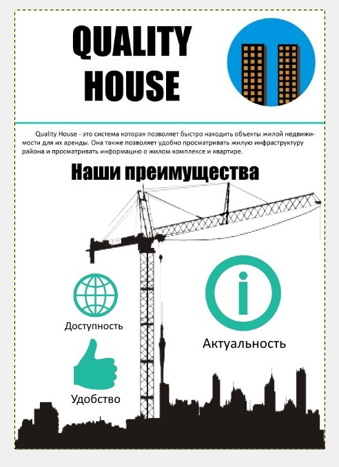

Quality House - это система, которая позовляет быстро находить объекты жилой недвижимости для их аренды. Она также позволяет удобно просматривать жилую инфраструктуру района и просматривать информацию о жилом комплексе.
Основные возможности:
- Выбор района для просмотра жилых комплексов
- Просмотр домов и квартир жилого комплекса
- Аренда выбранного жилого помещения
- Поиск квартир по заданным параметрам
- Сравнение квартир
Приемущества:
- Интерактивная карта для выбора района
- Возможность просмотра ЖК на карте и инфраструктуры района
- Удобное представления информации в виде таблиц